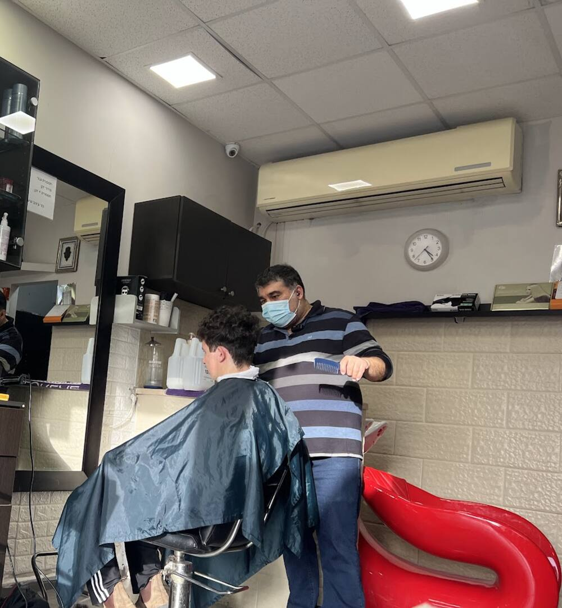
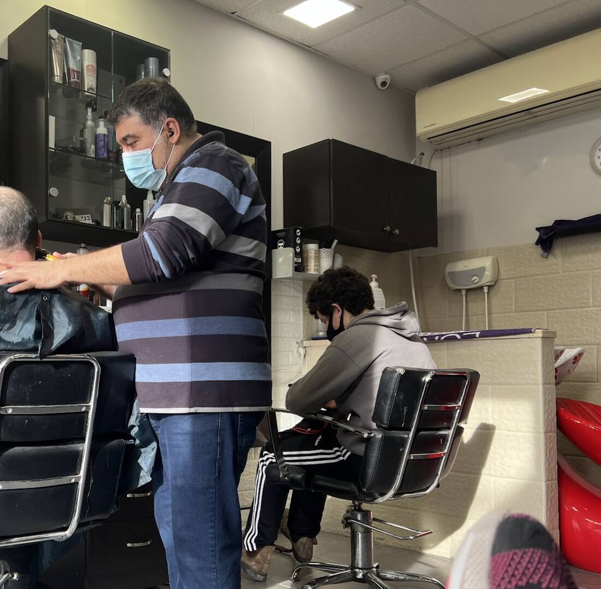
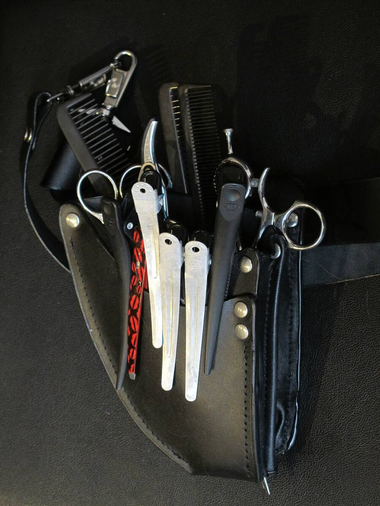
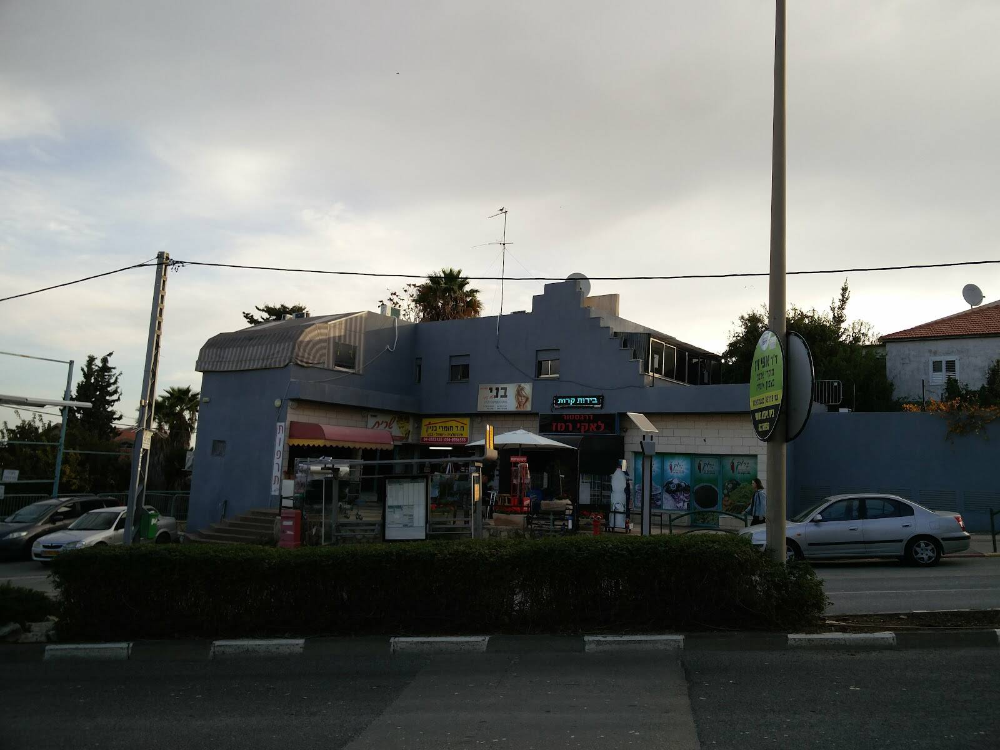

תספורות נשיםWomen's cuts
קצר, ארוך וכל מה שביניהם.Short, long and everything in between.
בני מעצב שיער לנשים, לגברים ולילדים, ברחוב אינטרנציונל 9 ברמות רמז.Benny cuts and styles hair for women, men and kids at 9 International Street, Ramot Remez, Haifa.


על הפנים, על השיער ועל מה שמתאים לכם.At your face, your hair and what suits you.
מספריים, מסרק ויד שמכירה את העבודה.Scissors, a comb and a practised hand.
על הפנים, על השיער ועל מה שמתאים לכם.At your face, your hair and what suits you.
מספריים, מסרק ויד שמכירה את העבודה.Scissors, a comb and a practised hand.
כמו שכתוב על השלט מעל הדלת.Just as the sign above the door says.
קצר, ארוך וכל מה שביניהם.Short, long and everything in between.
תספורת, סידור זקן או שניהם יחד.A cut, a beard trim, or both.
בני מייעץ אם צריך גוונים, ואיזה גוון מתאים.Benny advises whether you need them, and which shade.
אינטרנציונל 9, רמות רמז.9 International St., Ramot Remez.
״בני כבר במבט הראשון הבין בדיוק מה דרוש לשערי ומה מתאים למבנה פניי.״ “From the very first look, Benny understood exactly what my hair needed and what suits the shape of my face.”
״בני הוא הספר הכי נחמד באיזור. בעל מקצוע מצוין תמיד אדיב ואף פעם לא מתעצבן. אני מסתפר אצלו כבר יותר מעשרים שנה.״
“Benny is the nicest barber in the area. An excellent professional, always polite, never loses his temper. I've been getting my hair cut by him for more than twenty years.”
״בני אבשלומוב הוא ספר מיומן, ותיק, מנוסה ואדיב… הוא מספר נשים, ילדים וגברים. בני הוגן מאוד, קשוב לבקשות הלקוחות ומייעץ להם לגבי הצורך בתספורת / בגוונים.״
“Benny Avshalomov is a skilled, long-standing, experienced and courteous hairdresser… He cuts women, children and men. Benny is very fair, listens to what clients ask for and advises them on whether they need a cut or highlights.”
״לא רק ספר, גם חבר יקר. מקצוען… ממליץ בחום.״
“Not just a barber, also a dear friend. A real pro… Highly recommended.”
״בני איש נחמד ומקצועי. זכינו בתספורת מקסימה… תודה!״
“Benny is a kind, professional man. We got a lovely haircut… Thank you!”
״סוף־סוף אני יכולה לומר בוודאות: את הספר שלי מצאתי!״
“At last I can say it for sure: I've found my hairdresser!”
״קשוב לבקשות הלקוחות ומייעץ להם.״
“Listens to what clients ask for and advises them.”
מנקבים את הכרטיס, והוא נשלח לבני בוואטסאפ.Punch the card and it goes to Benny on WhatsApp.

תמונה להמחשהIllustrative photoכן. נשים, גברים וילדים, כמו שכתוב על השלט.Yes. Women, men and kids, as the sign says.
כן. בני גם מייעץ אם צריך גוונים, ואיזה גוון מתאים לשיער שלכם.Yes. Benny also advises whether you need them and which shade suits your hair.
בוואטסאפ או בטלפון 050-779-1496. יש גם קו נייח: 04-812-1167.On WhatsApp or by phone at 050-779-1496. There's also a landline: 04-812-1167.
ראשון, ושלישי עד חמישי: 10:00–19:00. שישי: 8:00–15:00. שני ושבת: סגור.Sunday, and Tuesday to Thursday: 10:00–19:00. Friday: 8:00–15:00. Closed Monday and Saturday.
בשורת החנויות ברחוב אינטרנציונל 9, רמות רמז, חיפה.In the row of shops at 9 International Street, Ramot Remez, Haifa.

רמות רמז, חיפה. חפשו את השלט ״בני״ מעל החנויות.Ramot Remez, Haifa. Look for the "בני" sign above the shops.
נשים, גברים וילדים. תספורת, גוונים וסידור זקן.Women, men and kids. Cuts, highlights and beard trims.